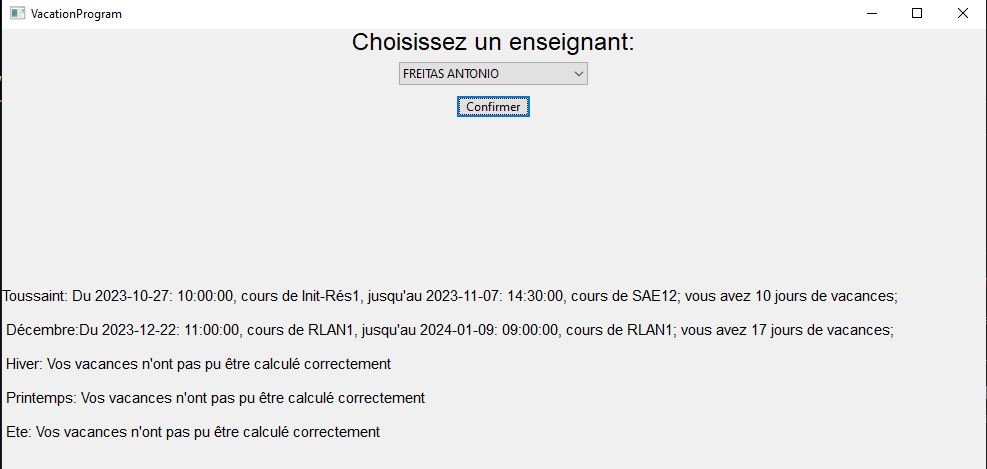
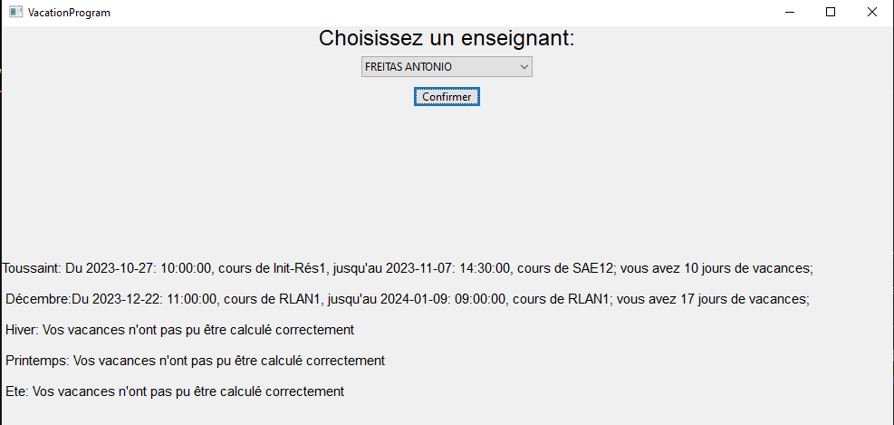

A propos de moi

Etudiant en première année de BUT Réseaux et Télécommunications
Je m'appelle Tournebize Kélyan, j'ai 18 ans, et je suis actuellement étudiant en première année de BUT en Réseaux et Télécommunications.
Après avoir passé un baccalauréat Général avec pour spécialités Mathématiques et Numérique et Sciences Informatiques (NSI), j'ai décidé d'intégrer une formation de BUT en Réseaux et Télécommunications afin de pouvoir suivre le parcours Cybersécurité proposé dès la deuxième année, mais aussi pour la possibilité de faire de l'alternance, en deuxième et en troisième année.
Actuellement, je suis à la recherche d'un contrat d'alternance à compter de Septembre 2024, sur un rythme de 1 mois / 1 mois, afin de travailler avec celle-ci pendant une ou deux années et renforcer mes compétences tout en comprenant les enjeux du milieu professionnel.
Formation
Année 2023-2024:
- Première année de BUT en Réseaux et Télécommunications
Juillet 2023:
- Inscription en formation de BUT en Réseaux et Télécommunications
Juin 2023
- Obtention d'un baccalauréat général avec les spécialités Mathématiques et NSI
Février 2023
- Obtention de la certification Pix
Experience Professionnelle
Janvier 2020:
Lors de mon année de 3ème, j'ai eu l'occasion de réaliser un stage d'une semaine aux Thermes de Vichy. Lors de ce stage, j'ai accompagné le bactériologiste de l'établissement afin de faire des analyses sur les différentes eaux de source de l'établissement, afin de vérifier qu'aucune bactéries non désirables soient présentes

Compétences
Compétences techniques
Gestion d'un système Linux
Lors de nombreux TD et TP, j'ai eu l'occasion d'apprendre la gestion d'un système linux à l'aide de commandes Bash.
En effet, j'ai eu l'occasion d'apprendre les commandes shell afin de lister, créer, renommer, déplacer des fichiers et des répertoires, mais aussi comment gérer leurs droits, leur propriétaire ou encore leurs groupes. J'ai également appris à coder des scripts, pour utiliser plus facilement ces commandes.
J'ai également appris à mettre en place des solutions de sauvegardes grâce à l'outil Rsync.
Rsync / BASH / Linux / Gestion de données
Programmation
Lors de Projets et dans le cadre de ma Terminale spécialité NSI, j'ai appris la programmation python.
En effet, j'ai découvert la programmation Python lors de mon année de Première. J'ai par la suite puis renforcer grandement mes compétences, lors de mes Projets, notamment mon projet de Terminale, mais aussi lors de mes projets de BUT.
J'ai également appris à traiter des données d'un fichier excel grâce à la librairie Pandas.
Programmation / Python / Pandas / Traitement de données
Configurer un réseau et ses équipements
Lors de nombreux TP, j'ai appris à mettre en place et configurer différents équipements réseaux.
En effet, j'ai eu l'occasion de configurer certains équipements réseaux tels que des routeurs, des commutateurs, des bornes wifi ou de simples ordinateurs, dans un premier temps sur Cisco Packet Tracer, puis de vrais équipements.
Réseaux / Cisco / Borne Wifi / Routeurs & Commutateurs
Programmation Web
Lors de Projets et dans le cadre de ma Terminale spécialité NSI, j'ai appris la programmation web
J'ai découvert la programmation web lors de mon année de Terminale, puis j'ai grandement renforcé mes compétences lors de mon BUT lors de la réalisation de projets, avec pour exemple ce portfolio.
J'ai également appris de nouveaux frameworks web, avec par exemple le React, le Vue, ou encore le Sass.
Web / HTML / CSS / JavaScript / PhP / MySQL
Analyse de signaux
Lors de nombreux TD et TP, j'ai eu l'occasion d'apprendre à observer des signaux électriques
En effet, j'ai eu l'occasion d'utiliser des osciloscopes et des générateurs de fonction afin d'observer des signaux électriques, dans différentes situation, avec l'exemple des signaux des canaux TnT, ou encore d'un signal à l'intérieur d'une paire torsadée d'un câble Ethernet.
J'ai également étudié les notions liées aux câbles de fibre optique.
Signaux / Fibre / Câbles à paire torsadées
Qualités
Mûr
Je sais recevoir des remarques et des commentaires dans le but de m'améliorer sans adopter une attitude trop défensive
Patient
Lorsque je rencontre un problème en projet, je sais me montrer patient afin de trouver la solution à ce problème
Passionné
Lorsque je suis intéressé par un sujet, je sais me donner à fond pour atteindre mes objectifs
Efficace
Je sais me montrer efficace afin de réaliser mes projets dans les temps données
Esprit D'équipe
Je sais oeuvrer avec les autres et être solidaire afin d'aider mes collègues à la réalisation de nos objectifs.
Langues
B2 / C1
Anglais
B1
Espagnol
Projets
Analyse de données (SAE15)
L'objectif de cette SAE était d'exporter l'emploi du temps depuis l'ENT afin d'en extraire certaines données. Ma mission était de traiter les informations de l'emploi du temps afin d'aider un enseignant à préparer ses vacances. J'ai donc utiliser la librairie Python Pandas afin d'extraire depuis l'emploi du temps les données qui m'intéressaient, à savoir l'intitulé et la date des derniers et premiers jours de cours avant et après les vacances, puis calculer le nombre de jours pendant lesquelles l'enseignant était en vacances. Ainsi, Il m'a fallu analyser les données de l'emploi du temps afin de trouver les informations correspondantes. Par la suite, j'ai codé un interface pour faciliter l'utilisation du code. Ce projet est téléchargeable via mon GitHub, depuis la section contact
Pour ce projet, j'ai obtenu la note de 18/20
Images du projet: (Le projet, le code, l'interface)

 

Création et maintien du Portfolio (SAE14)
L'objectif de cette SAE était de nous aider à réaliser tous les éléments essentiels à notre insertion professionnelle. Ainsi, nous avons, dans un premier temps, réaliser notre C.V, puis nous avons par la suite créer notre Portfolio, utile afin de mettre en valeur nos compétences ainsi que nos réalisations afin de les illustrer lorsque l'on candidate pour un emploi. De plus, ce projet nous a permis d'utiliser les différentes compétences en développement Web que nous avions précedemment acquises, afin de fournir un travai exemplaire lors de sa réalisation. Ainsi, j'ai donc pu fournir ce portfolio complet, avec un design réfléchi, permettant l'utilisation d'une palette de couleur moins fatiguante pour les yeux, et régulièrement mis à jour.
Lors de mon premier semestre, j'ai obtenu la note de 14/20 pour ce projet.
Se sensibiliser à l'hygiène Informatique et à la Cybersécurité (SAE11)
L'objectif de cette SAE était de découvrir, par équipe de 3, un sujet, défini par notre enseignant, en lien avec notre formation. Mes camarades et moi avions décidé de traiter de la Sécurité des mots de passe. Nous devions ensuite préparer un PDF afin de répondre à notre sujet. Ainsi, cette SAE nous a permis de nous initier à différents secteurs en rapport avec la Cybersécurité, mais nous a aussi permis de nous entrainer à l'oral, car nous devions ensuite présenter notre sujet à notre enseignant ainsi qu'à l'ensemble de nos camarades. Ma mission était de découvrir et d'expliquer quel est l' utilité d'un mot de passe, comment est calculé leur robustesse, d'expliquer que cette robustesse est exprimée en entropie de shannon, et enfin de montrer l'importance d'un mot de passe robuste. Ce projet est visible en cliquant sur le bouton ci-dessous
Pour le compte-rendu de ce projet, nous avions obtenu la note de 15,25/20
Création d'une console de jeu (Année de Terminale)
L'objectif était de créer une console de jeu, similaire à un Steamdeck ou une Nintendo Switch, avec des jeux dessus. Ma mission était de coder l'un de ces jeux, j'ai donc décider de coder un jeu platformer similaire à un Mario; Il a fallu coder le jeu de A à Z, que ce soit les mouvements, les colisions ou la génération des niveaux. J'ai ensuite pu intégrer les designs créées par une camarade, et le jeu était fini dans les temps données. Ce projet est téléchargeable via mon GitHub, depuis la section contact
Pour ce projet, nous avions obtenu la note de 17/20
Images du projet: (La console, le menu du jeu et le jeu)


Divers
En dehors des études, j'ai plusieurs passions dans lesquelles j'aime me plonger, en fonction des périodes de l'année.
Parmis ces passions, il y a le Surf, que je pratique pendant l'été.
De plus, j'aime aussi aller à la salle de musculation, dans laquelle je vais m'exercer lorsque j'ai du temps pour moi.
De temps en temps, j'aime également aller à l'escalade avec des amis, lorsque l'occasion se présente.
A côté de ça, je collectionne les pierres et les minéraux.

Contact
Contact/Réseaux:
- Par mail: kelyan.tournebize@etu.uca.fr
- Par téléphone: 06 31 74 10 71
- Mon GitHub:
- Mon LinkedIn: